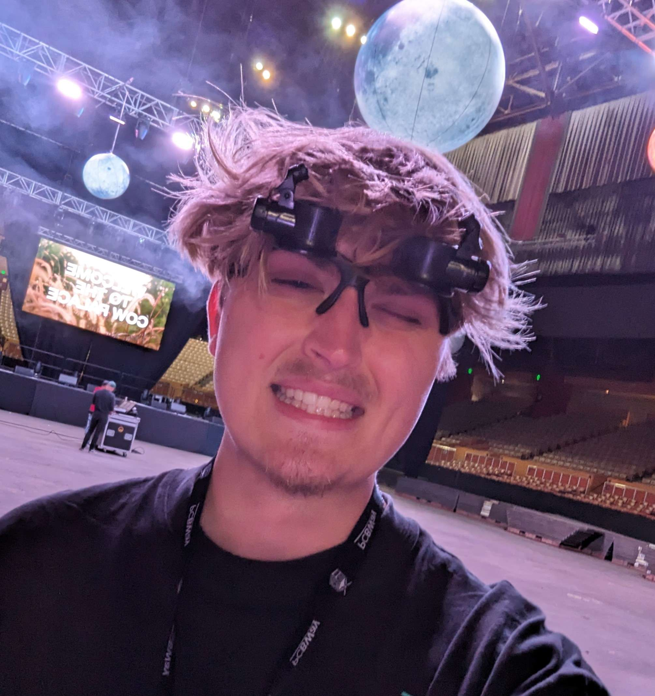

Engineering Communication

Hi, I’m Chase Anderson, an engineer with knowledge in machine intelligence, embedded security, and electronic design. My work focuses on transforming innovative ideas into functional products, from advancing robotic manipulation to developing secure supercomputing platforms. I'm most effective when bridging technical complexity with practical application, ensuring each project I list achieves meaningful and measurable outcomes.
Beyond technical work, I’ve been deeply involved in building community leadership, both locally and internationally, through collaborations with numerous teams which I encourage you check out! My approach prioritizes hands-on problem-solving and fostering connections that drive sustainable and impactful improvements.